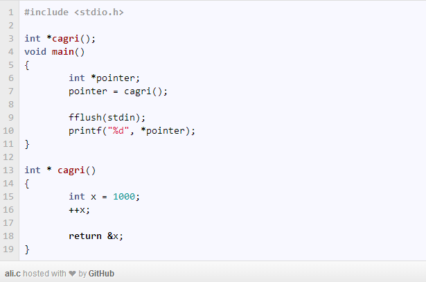
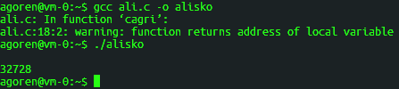
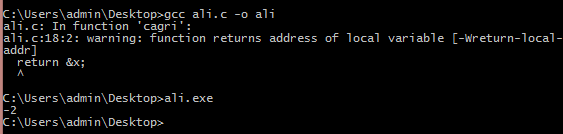
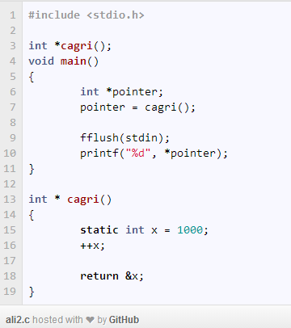
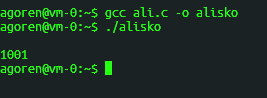
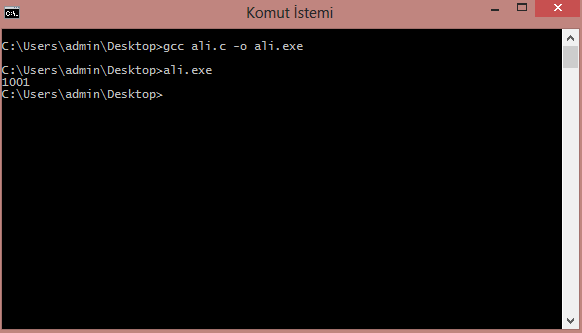

C Dangling Pointer Sorunu
Bir pointer düşünelim bu pointer’ı bir değişkene atayalım. Sonra ikinci bir pointer olduğunu varsayalım bu ikinci pointer’ı da ilk pointer’a atayalım. Bu durumda iki pointer da aynı adrese bakmış oluyor. Bu durum segmentation fault hatasina sebep olmaktadir ve Buffer Overflow yapılmasına davet çıkardığı için güvenlik açığı oluşturabilir.
İlk pointer fflush ve stding parametresiyle temizleniyor yani deallocate ediliyor varsayalım. Bu durumda bu bölgenin değeri nil olmakta. Ve bu durumda ikinci pointer dangling pointer yani sarkıtılmış gösterge(o kadar çevirisini aradım en mantıklısı bu oldu) olmakta.
Çözüm için bazı yöntemler var. Bunlardan birisi akıllı pointer kullanımıdır. C++11 ile kullanımı biten auto_ptr ve onun yerine gelen unique_ptr kullanılabilir ilk yöntemlerdir.
Bir de bunun başka bir alternatifi olarak tombstone metodu var. Burada da yapılan şey pointer değişkenin başına başka bir değer ekliyoruz.
Öncelikle bahsettiğimiz konuya dair bir örnek kod verelim.

Bu hataya yakalanmış bir kodun çıktısı şöyle olacaktır. Tabii bu sistemden sisteme göre değişir. Aslında bu çıktı çöp bir değerdir.
Örneğin koding.com sanal makinesinde yaptığım denemenin sonucu:

Bu da kendi makinemde yaptığım işlemin sonucu:

Bu hatanın bize verdiği çıktılar compile time’da şöyle olacaktır:
warning: function returns address of local variable [-Wreturn-local-addr]
ya da
warning: function returns address of local variable
Bu hataları alıyorsak derleme zamanında demek ki bir yerlerde dangling pointer oluşmuştur. Bunu çözmemiz aslında basit. Verdiğimiz kodda oluşturduğumuz x değişkenini static variable’a çevirmemiz yetecektir.
Yani bu durumda şöyle bir değişiklik olacak:

Şimdi artık bu kodumuz dangling pointerdan arındırılmış vaziyette. Buradaki x değişkeni yerel bir değişkendir. x değişkeninin adresi cagri işlevi içerisinde döndürüldükten sonra sıfırlandı. Ancak pointer hala bu adresi işaret ediyordu. Dangling pointer hatasının açıklaması buydu. Biz bu değişiklik ile bu hatayı çözüme kavuşturmuş olduk.
Koding sanal makinesindeki çıktı:

Kendi makinemdeki çıktı:

Referanslar:
https://www.owasp.org/images/f/fa/OWASPIL8DanglingPointer.pdf
https://www.blackhat.com/presentations/bh-usa-07/Afek/Whitepaper/bh-usa-07-afek-WP.pdf
http://www.ccs.neu.edu/home/will/CPP/dangling.html
http://www.codeproject.com/Articles/378335/Dangling-Pointers-Pathology-Prevention-and-Cure
http://www.democraticprogrammers.com/dangling-pointer-problem-cpp-example/
http://www.c4learn.com/c-programming/c-dangling-pointer-causes/
Comments
Comments powered by Disqus